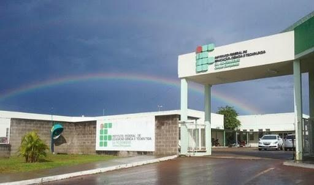

O Lugar

O IFSul - Campus Charqueadas
Foto: Samira Borba
Certeau (1990) argumenta que um espaço é um lugar praticado, ou seja, que o espaço é animado por aqueles que o experimentam, pelos movimentos e circunstâncias que o temporizam. A dimensão dessas relações experimentadas pelos jovens-alunos ultrapassa o espaço físico e alcança um espaço subjetivo.
O espaço institucional do IFSul é praticado pelos alunos, professores, servidores, funcionários, etc, fazendo desse espaço, um lugar.